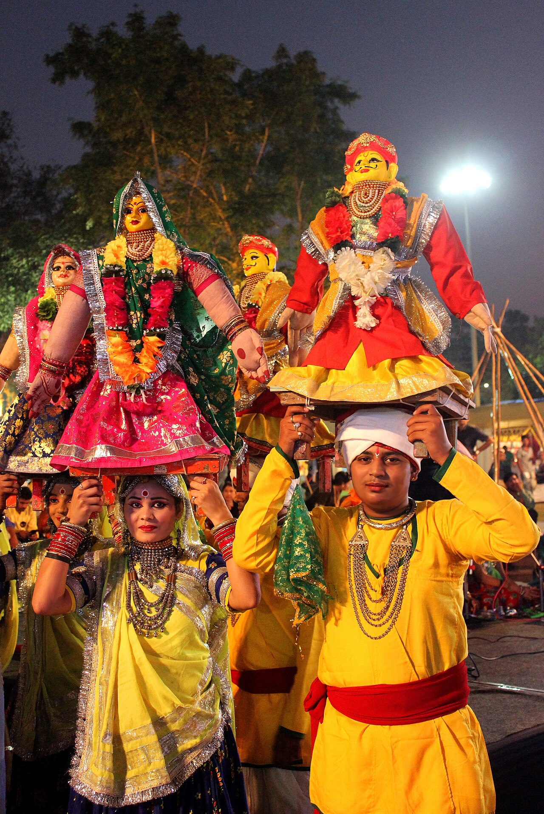

Gauri / Parvati
Mother of marital grace.

गणगौर
Rajasthan spring festival of Gauri–Shiva — clay idols, women’s songs, and marital bliss vows.
होली के बाद गणगौर: गौरी–ईशर पूजा, सुखी वैवाहिक जीवन, फसल। प्रतिमा विसर्जन।
Gangaur begins after Holi: women worship Gauri (Parvati) and Isar (Shiva) for happy marriage and harvest. Idols are crafted, carried in procession, then immersed.
लोक में गौरी मायके, शिव अतिथि — गीतों में दंपति आशीर्वाद।
Folk memory links Gauri’s visit to her parents’ home and Shiva following as guest — songs tease and bless couples.
देवी तप और मरुस्थल जल प्रार्थना जोड़ता।
Bridges Devi tapasya themes with desert water scarcity prayers.
Mother of marital grace.
Ascetic husband who joins the folk procession.
खाड़ी–अमेरिका में राजस्थानी समुदाय फोटो प्रतिमा से गणगौर।
Rajasthani diaspora in Gulf and US hosts community Gangaur with photo idols when clay is impractical.
Save this festival to My Board to track ticks there.
Rajasthan spring festival of Gauri–Shiva — clay idols, women’s songs, and marital bliss vows.
Make or buy clay Gauri–Isar Daily evening songs until immersion Apply mehndi; share sweets Immerse on final day at water body
Bridges Devi tapasya themes with desert water scarcity prayers.
Help us validate this page: suggest a correction, add a detail, or highlight something useful for home puja readers.
Feedback is emailed to TirthaYatra for editorial review. It is not published live automatically (safer for quality and ads policy). You can also keep a personal copy on this device.